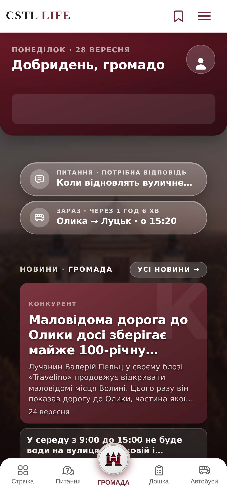
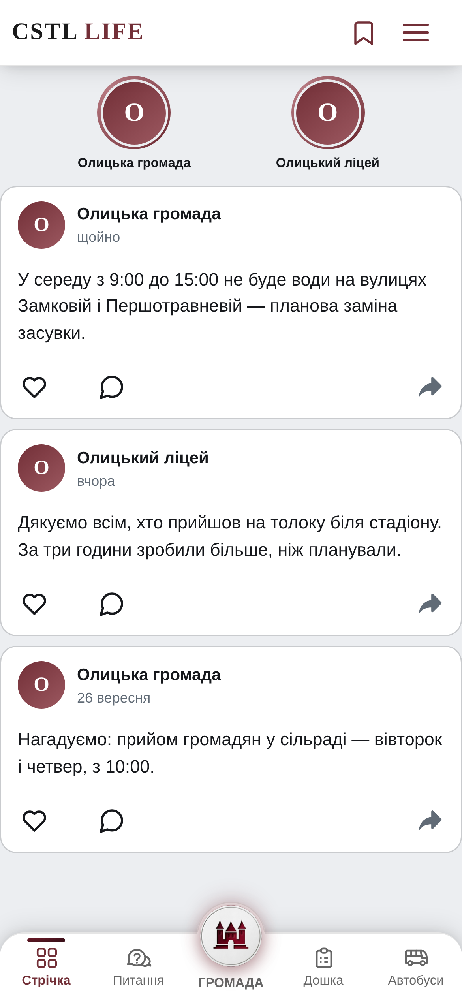
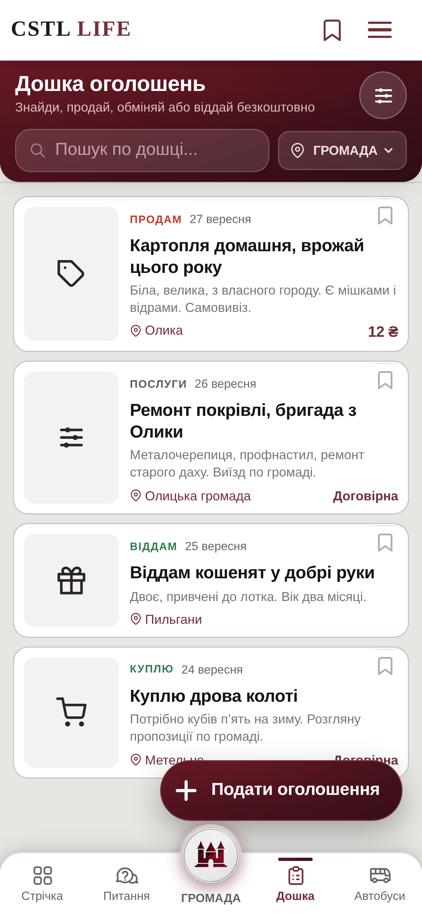
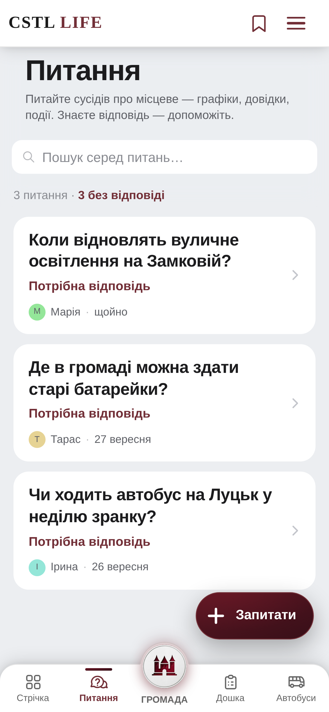
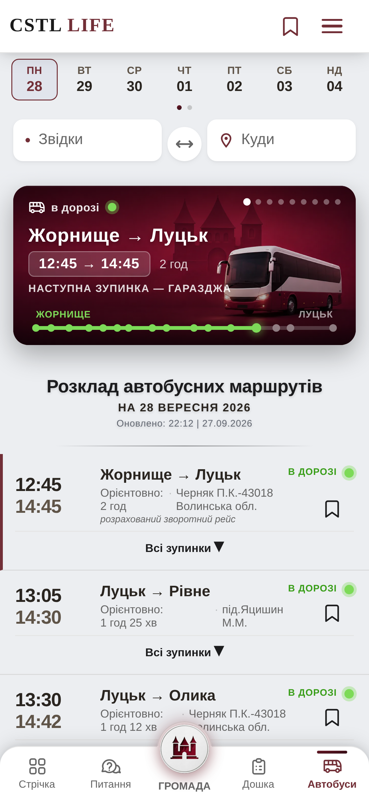

Що відбувається
поруч із тобою?
Новини.
Події.
Люди.
Тепер усе це
у твоєму смартфоні.
Все важливе.
В одному місці.
Будь у курсі.
Потрібне?
Знайдеш поруч.
Громада —
це люди.
Твоє місто.
У твоєму
смартфоні.
Автобус через 12 хв
+18°
Електропостачання
Олицька громада
CSTL LIFE
Твоя громада у смартфоні.
Спробуй «Громаду»
castlelife.org